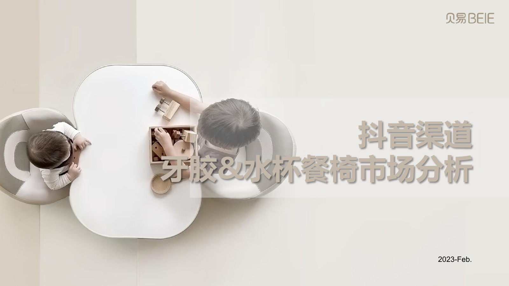
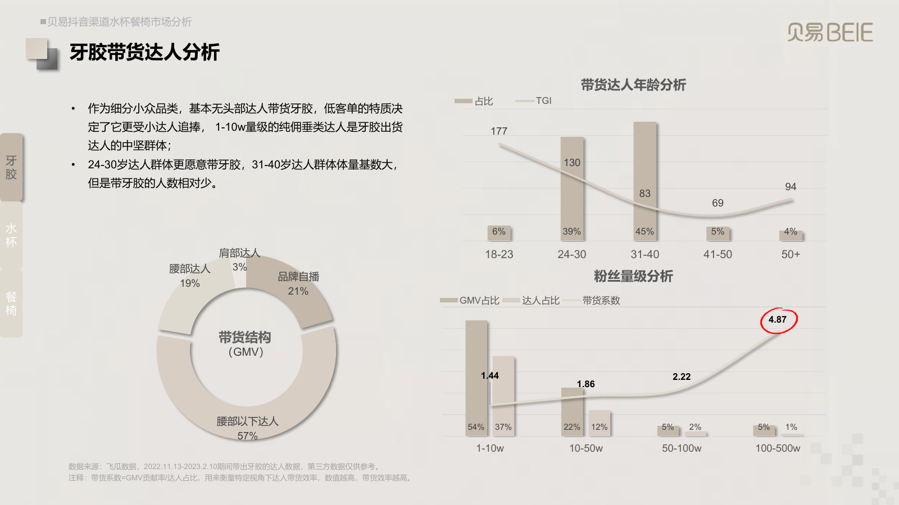
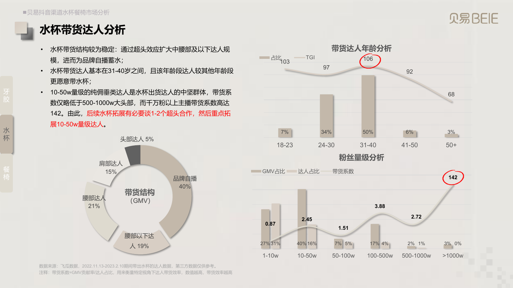
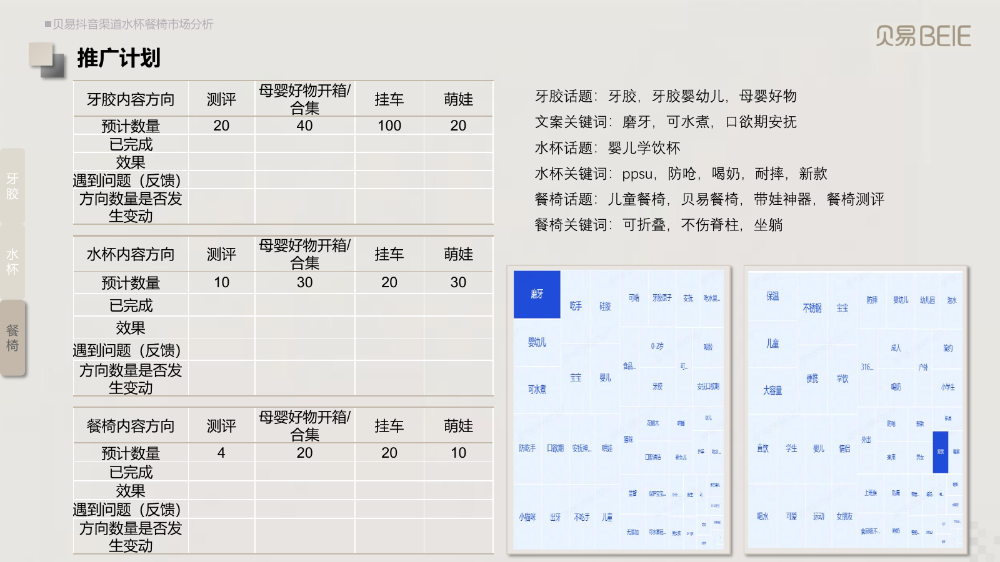
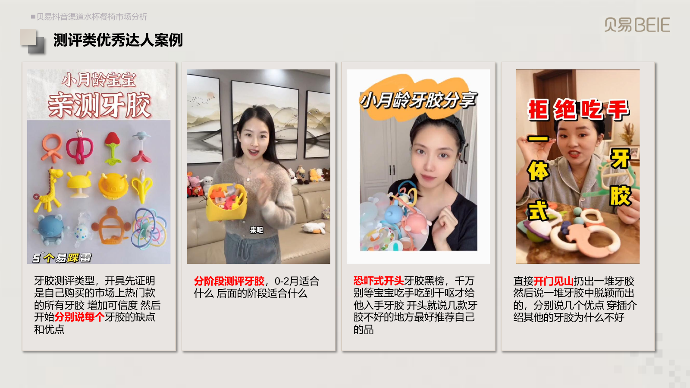
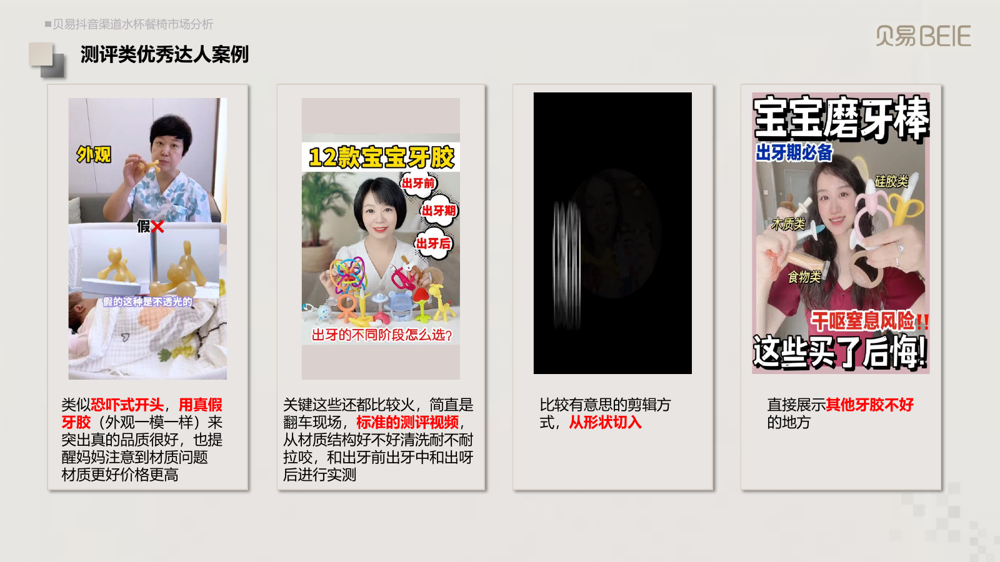
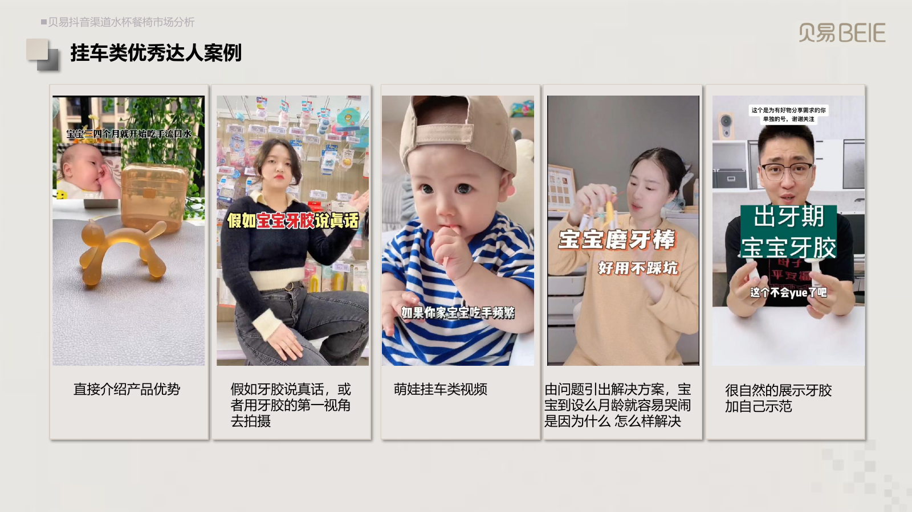
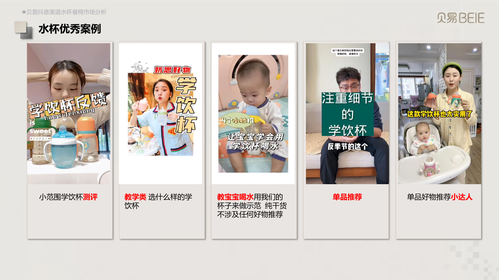
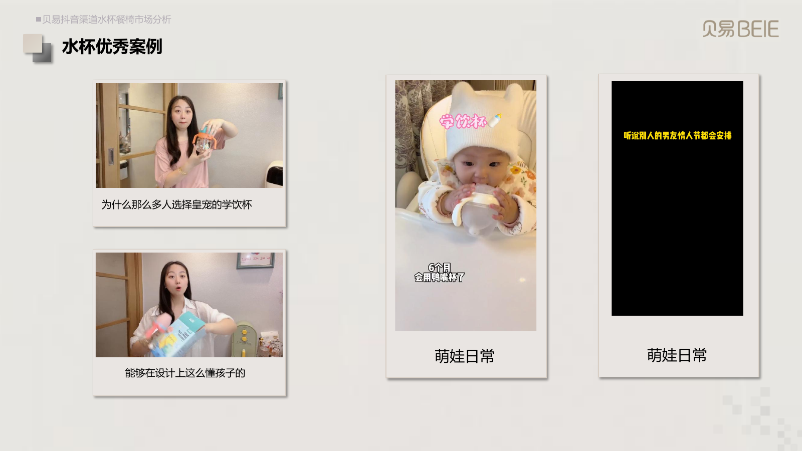
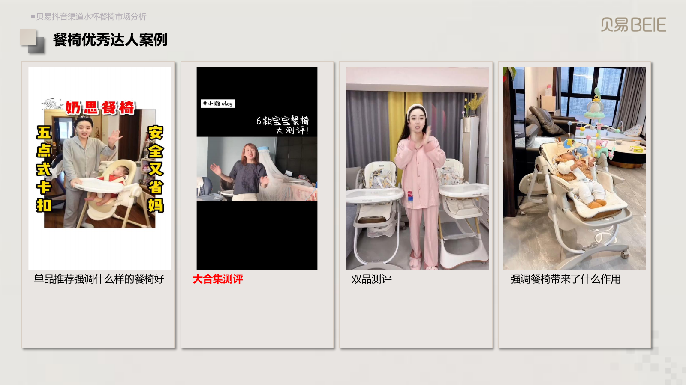

01 / 市场研究 / 竞品分析 / 用户洞察
儿童食养脾胃市场分析
为了找到下一阶段的业务增长机会，我整理了儿童食养市场的规模变化、竞争品牌、用户画像、达人带货及品牌5A人群数据。
研究中发现，市场新客增长较快，但低价产品竞争加剧；小羊森林在部分目标人群中的种草覆盖仍有不足。因此，我提出加强31—40岁妈妈、精致妈妈及资深中产人群的种草，并从相关竞品的优质达人中寻找合作机会。
内容创作 · 市场策略 · 团队管理 · AI提效
一些过去工作中独立整理的市场研究、业务流程、团队规划和学习笔记。
01 / 市场研究 / 竞品分析 / 用户洞察
为了找到下一阶段的业务增长机会，我整理了儿童食养市场的规模变化、竞争品牌、用户画像、达人带货及品牌5A人群数据。
研究中发现，市场新客增长较快，但低价产品竞争加剧；小羊森林在部分目标人群中的种草覆盖仍有不足。因此，我提出加强31—40岁妈妈、精致妈妈及资深中产人群的种草，并从相关竞品的优质达人中寻找合作机会。
02 / 产品研究 / 脚本策划 / 达人共创
为了让床围栏种草视频更有说服力，我先梳理产品的材质、结构、稳固性、安全细节和使用便利性，明确用户购买时最关心的问题，以及不同卖点应该怎样通过画面展示。
针对不同类型的达人，我分别整理了横向测评、开箱推荐和萌娃生活记录等视频案例与拍摄建议。测评类重点展示产品差异，开箱类通过安装和操作呈现卖点，萌娃类则需要将孩子的真实行为与产品使用场景结合起来，而不是简单让产品出镜。
03 / 市场分析 / 竞品研究 / 达人策略
在负责贝易抖音渠道相关工作期间，我对水杯、餐椅和牙胶品类进行了市场研究，主要分析行业规模、产品价格带、竞争品牌，以及不同量级达人的带货表现。
研究中发现，不同品类适合的推广方式差异很大。例如牙胶以低粉丝量级垂类达人为主，水杯则更需要关注10—50万粉丝的中腰部达人，并考虑头部直播资源。结合这些分析，我进一步整理了各品类适合的内容形式、达人合作方向和推广计划。

第14页中的推广数量为当时的计划。

第5页 · 点击在线阅读

第10页 · 点击在线阅读

第14页 · 点击在线阅读

第16页 · 点击在线阅读

第17页 · 点击在线阅读

第18页 · 点击在线阅读

第19页 · 点击在线阅读

第20页 · 点击在线阅读

第21页 · 点击在线阅读
04 / 经营分析 / 竞品对比 / 业务优化
除了内容和达人推广，我也会从整体经营数据中寻找营销需要解决的问题。这份周报围绕床围栏、浴盆、牙胶等产品，分析销售目标完成情况、搜索流量、商品转化、推广投产、竞品差距及客户流失。
在复盘中，我不仅关注数据变化，也结合问题提出具体优化建议，包括产品详情页调整、种草内容方向、推广投入、价格测试和商品组合等。
05 / 业务流程 / 达人筛选 / 新人培训
带团队时发现，新人往往只知道怎么联系达人，却不一定能判断达人是否值得合作、适合什么产品，以及怎样推进后续内容。
因此，我把自己积累的达人开发、账号判断、商务沟通、内容审核及效果复盘经验整理成SOP，并加入不同类型达人的筛选标准和合作思路，方便团队成员在实际工作中查阅和使用。
06 / 团队搭建 / 岗位分工 / 目标管理
从自己负责达人合作，到开始带团队，我发现只安排每天联系多少达人、发布多少视频，很难真正提高团队的内容能力。
因此，我重新梳理了内容种草团队的工作目标、岗位职责和能力要求，区分内容策划与商务开发的工作重点，同时整理培训方向、绩效考核思路及跨部门协作流程。
希望让团队成员不仅知道要完成什么任务，也清楚为什么做、怎样判断内容质量，以及如何根据数据调整工作。
07 / 持续学习 / 商业认知 / 知识积累
除了日常工作，我也会主动学习和整理商业、用户需求及沟通合作相关的知识。
这份思维导图主要记录了我对用户需求、产品价值、商业关系等方面的学习和思考。工作中遇到一些问题时，也会重新回到这些内容中寻找启发，逐步形成自己的理解。